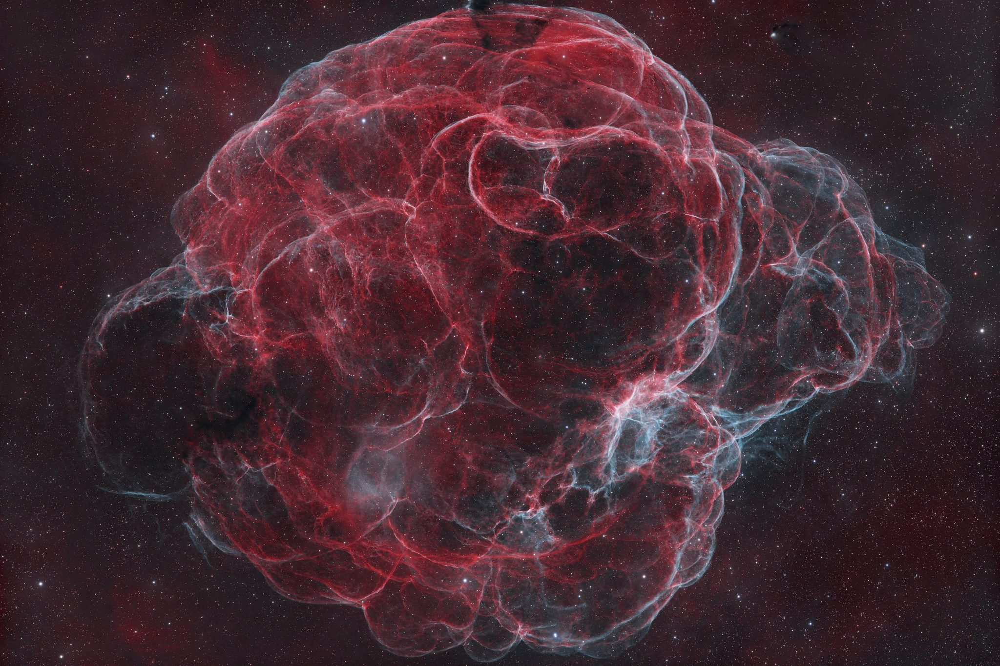
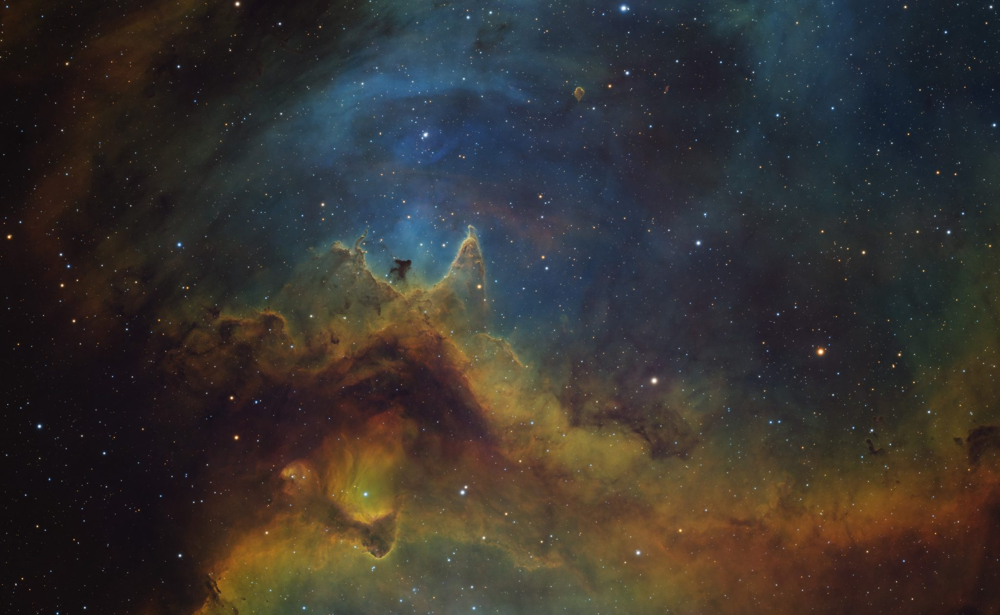
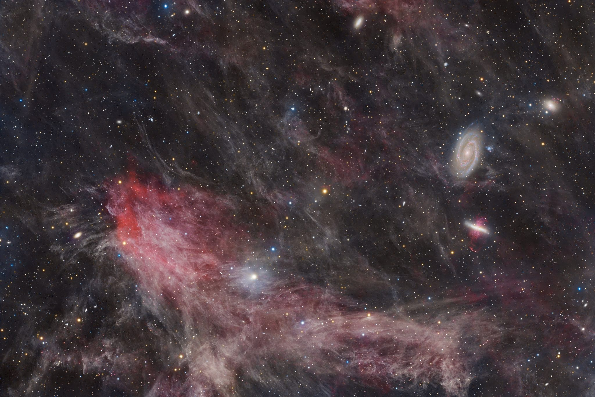
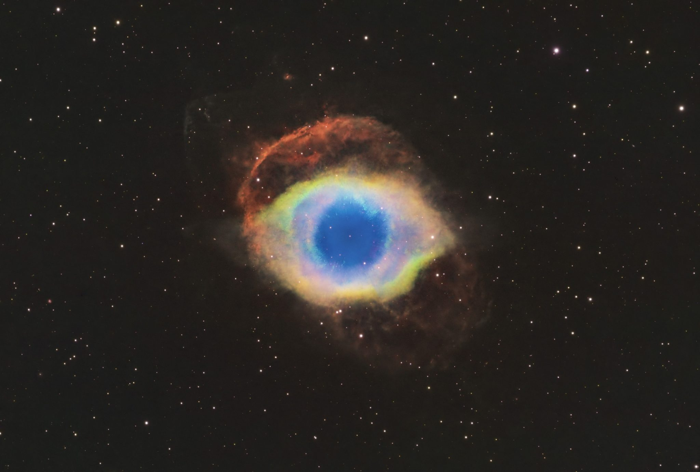

Latest · 01 / 05
IC 63 · Cassiopeia · LRGB + Hα
Ghost of Cassiopeia
- Integration
- 50h 41m
- Telescope
- GT81 + ASI585MM
- Camera
- ASI585MM Pro
- Nights
- 13
Latest · 01 / 05
IC 63 · Cassiopeia · LRGB + Hα

Featured · 02 / 05
Sh2-240 · Simeis 147 · Taurus · HOO

Featured · 03 / 05
IC 1848 · Cassiopeia · SHO

Featured · 04 / 05
M81 · M82 · faint galactic dust · Ursa Major · LRGB + Hα, OIII

Featured · 05 / 05
NGC 7293 · Aquarius · SHO
Deep-sky pictures, each shown with the full record of how it was made: every filter, every night, every telescope.
Counted by AstroTracker from the pictures on this site: every sub once, and rejected subs add no time.